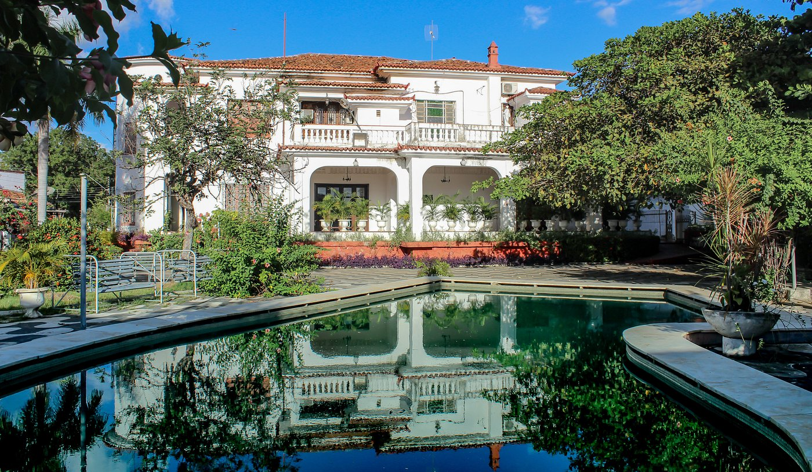
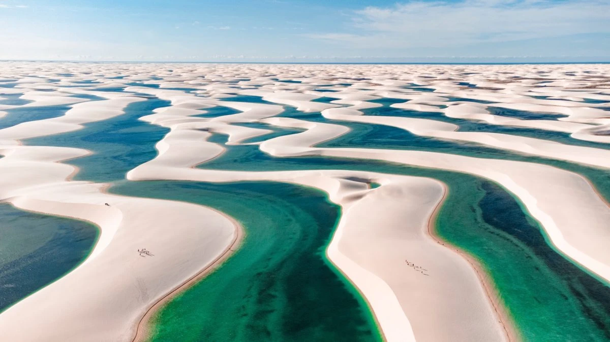
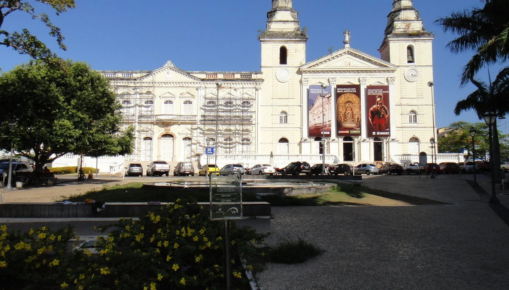
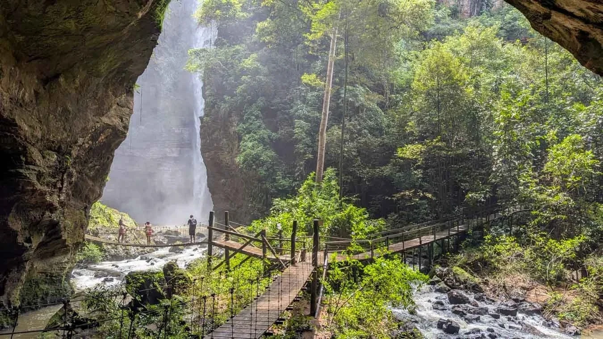
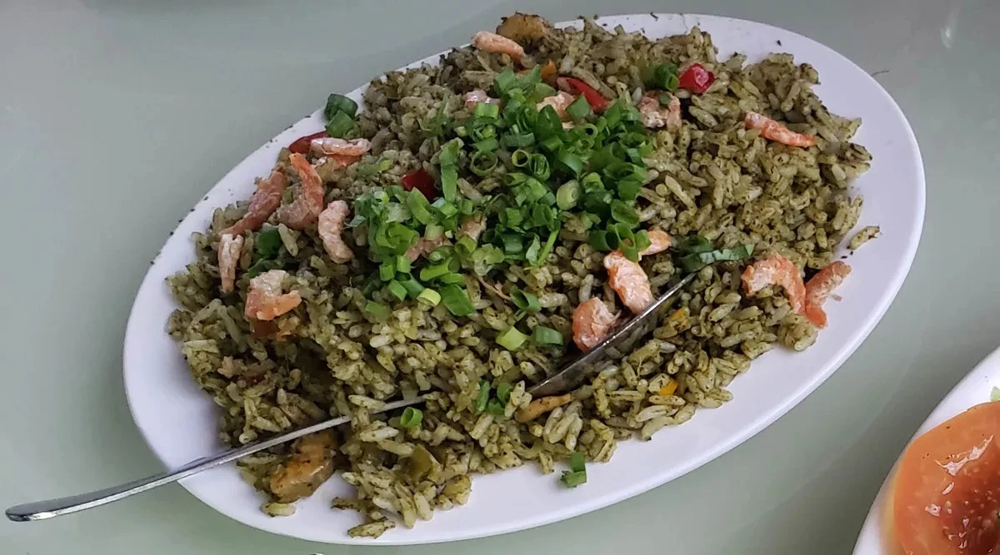
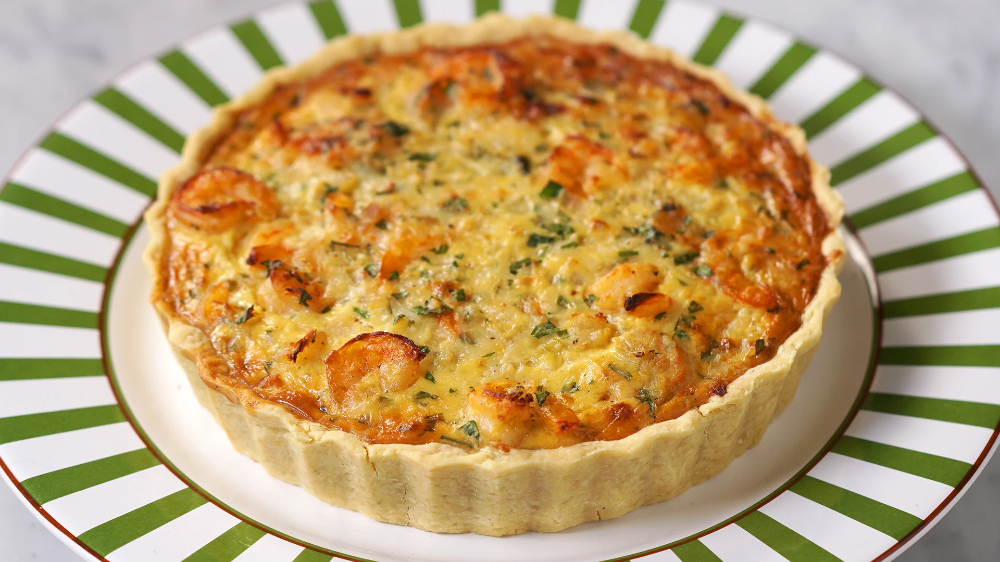
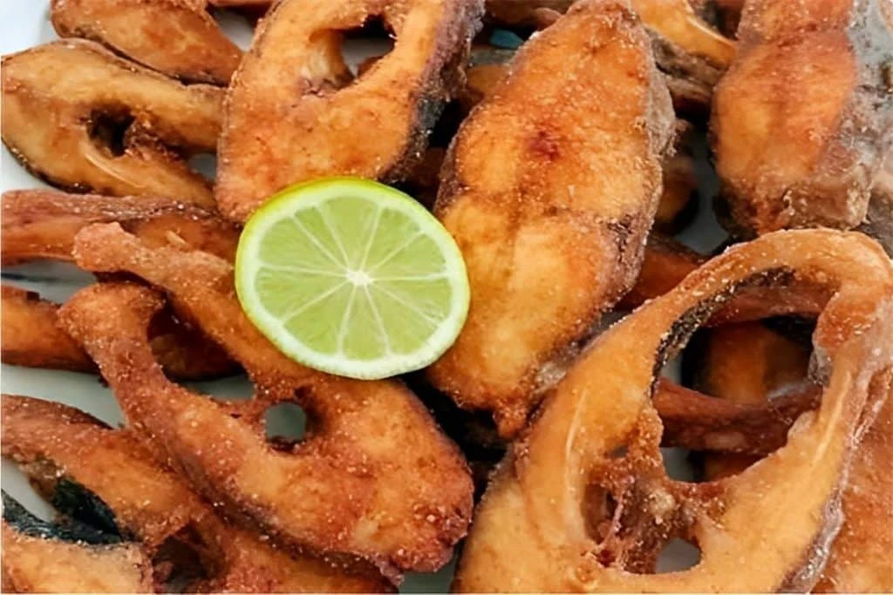

Capital
São Luís
Conheça destinos, culturas, sabores e paisagens de todas as regiões
brasileiras.
Destinos, culturas e paisagens
incríveis te esperam.
O Maranhão é um estado localizado na Região Nordeste do Brasil, conhecido por sua rica diversidade cultural, histórica e natural. Possui paisagens únicas, como dunas, lagoas cristalinas, chapadas, rios e um importante patrimônio arquitetônico colonial. Sua cultura resulta da influência indígena, africana e europeia, refletida na música, na culinária e nas festas populares.

São Luís
Aproximadamente 329.651 km²
Cerca de 7 milhões de habitantes
Nordeste

Um dos cenários naturais mais impressionantes do Brasil, formado por extensas dunas de areia branca e lagoas de águas cristalinas que surgem durante o período chuvoso.

Patrimônio Mundial da UNESCO, reúne casarões coloniais revestidos por azulejos portugueses e importantes construções históricas.

Área de preservação com cachoeiras, cânions, trilhas e formações rochosas que atraem amantes do ecoturismo.

Prato muito apreciado na região, feito com massa macia e recheio de camarão temperado.

Prato muito apreciado na região, feito com massa macia e recheio de camarão temperado.

Preparado com peixes de água doce ou salgada, geralmente servido com arroz, farofa e molho de pimenta.
O clima é predominantemente tropical, com período chuvoso entre janeiro e junho e período mais seco entre julho e dezembro.
O clima é predominantemente tropical, com período chuvoso entre janeiro e junho e período mais seco entre julho e dezembro.
A região dos Lençóis Maranhenses é a mais procurada pelos turistas, enquanto o sul do estado oferece belas paisagens naturais na Chapada das Mesas. Já São Luís é ideal para quem aprecia história e cultura.
A região dos Lençóis Maranhenses é a mais procurada pelos turistas, enquanto o sul do estado oferece belas paisagens naturais na Chapada das Mesas. Já São Luís é ideal para quem aprecia história e cultura.
A culinária maranhense é uma das mais autênticas do Brasil, destacando-se pelos frutos do mar, temperos regionais e influências indígenas, africanas e portuguesas.
A culinária maranhense é uma das mais autênticas do Brasil, destacando-se pelos frutos do mar, temperos regionais e influências indígenas, africanas e portuguesas.